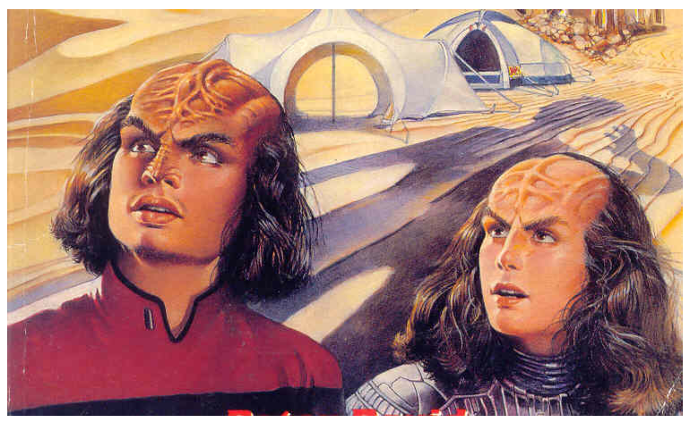

The rtrek package includes some Star Trek datasets, but much more data is available outside the package. You can access other Star Trek data through various APIs.
Technically, there is only one formal API: the Star Trek API (STAPI). rtrek has functions to assist with making calls to this API in order to access specific data. See the STAPI vignette for details.
The focus of this vignette is on accessing data from Memory Beta. rtrek interfaces with and extracts information from the Memory Alpha and Memory Beta websites. Neither of these sites actually expose an API, but functions in rtrek with querying these websites in an API-like manner. For working with Memory Alpha content, see the respective vignette.
Memory Beta is a website that hosts information on all things relating to officially licensed Star Trek productions, for example novels, comics, etc. These are official, but this is not the same and canon. For a canon-only focus, see Memory Alpha.
When talking about using rtrek to access data from Memory Beta, the term data is used loosely. It would be just as accurate to say information, content or text. While the site contains a vast amount of information, it is not structured in tidy tables like a data scientist would love to conveniently encounter. Memory Beta is a wiki and can be thought of as similar to an encyclopedia. The bulk of its pages consist of articles. While some of these may have interesting html tables contained within, the site largely offers textual data.
Since Memory Beta does not offer an API, the API-like interfacing provided by rtrek is just a collection of wrappers around web page scraping. In terms of what the relevant functions bring back from Memory Beta, there are real limitations on the level of generality and quality of formatting that can be achieved across such a massive and diverse collection of articles.
To see the available Memory Beta portals, call the main function for Memory Beta access, memory_beta, and pass it portals as the API endpoint.
memory_beta("portals")
#> # A tibble: 13 x 2
#> id url
#> <chr> <chr>
#> 1 books Category:Books
#> 2 comics Category:Comics
#> 3 characters Category:Characters
#> 4 culture Category:Culture
#> 5 games Category:Games
#> 6 geography Category:Geography
#> 7 locations Category:Locations
#> 8 materials Category:Materials_and_substances
#> 9 politics Category:Politics
#> 10 science Category:Science
#> 11 starships Category:Starships
#> 12 technology Category:Technology
#> 13 timeline Category:TimelineThe data frame returned provides each portal ID and respective “short URL”. These relative URLs are given in order to reduce verbosity and redundancy. All absolute URLs begin with http://memory-beta.wikia.com/wiki/.
In this special case where endpoint = "portals", this table is returned from the package itself because it is already known. The available portals are fixed. There is no accessing of Memory Beta yet. The URLs shown are also not needed by the user, but are provided alongside the IDs for context.
In contrast to the results of memory_alpha("portals"), notice that each url entry begins with Category: rather than Portal. The Memory Beta website does not explicitly offer “portals” like the Memory Alpha site. For consistency from the perspective of rtrek, several top-level categories at Memory Beta are treated as portals. The timeline portal is a special case. It is a shorthand for the timeline subcategory at culture/history/timeline.
Memory Beta is structured very similarly to Memory alpha, but also more consistently. The structural differences in content returned across some portals accessed by memory_alpha are not seen when obtaining data with memory_beta. This can make working with Memory Beta data a smoother experience.
When using a specific portal at the highest level (portal ID only), the returned data frame contains information about searchable categories available in the portal.
memory_beta("characters")
#> # A tibble: 22 x 2
#> characters url
#> <chr> <chr>
#> 1 "\"Real\" people" Category:%22Real%22_people
#> 2 Memory Beta images (characters) Category:Memory_Beta_images_(characters)
#> 3 Lists of unnamed characters Category:Lists_of_unnamed_characters
#> 4 Artificial beings Category:Artificial_beings
#> 5 Characters (alternate reality) Category:Characters_(alternate_reality)
#> 6 Characters (alternates) Category:Characters_(alternates)
#> 7 Characters by planet Category:Characters_by_planet
#> 8 Crossover characters Category:Crossover_characters
#> 9 Deep Space 9 residents Category:Deep_Space_9_residents
#> 10 Deep Space 9 (II) residents Category:Deep_Space_9_(II)_residents
#> # ... with 12 more rowsAgain, there are id and url columns. Unlike with high-level memory_alpha results, there are no group or subgroup columns. These are not applicable given the simpler structure and more consistent content structure of category and article pages at Memory Beta.
The above call does involve reaching out to Memory Beta. While the portals are stable, it is expected that content within is regularly updated. Remember that this is not a real API. Since one is not available, what is really going on behind the scenes is the use of xml2 and rvest for web page harvesting.
Some portals have terminal endpoints - in Memory Beta these are the written articles - at the top level, but typically the top level results for a portal are categories. You can always differentiate categories from articles by the URL, which will begin with Category: in the former case.
Descending through subcategories is done by appending their id values, separated by a forward slash /. Notice that compared to Memory Alpha, classification and resulting hierarchical organization can be more detailed for similar content.
x <- "characters/Characters by races and cultures/Klingonoids/Klingons"
memory_beta(x)
#> # A tibble: 1,074 x 2
#> Klingons url
#> <chr> <chr>
#> 1 Klingon Klingon
#> 2 Klingon (mirror) Klingon_(mirror)
#> 3 Kring's battle cruiser personnel Kring%27s_battle_cruiser_personnel
#> 4 Unnamed Klingons Unnamed_Klingons
#> 5 Aakan Aakan
#> 6 Aak'Torr Aak%27Torr
#> 7 Abbakh Abbakh
#> 8 Adon, son of Gorath Adon,_son_of_Gorath
#> 9 Adrokos Adrokos
#> 10 Aek-Nor Aek-Nor
#> # ... with 1,064 more rows
memory_beta(paste0(x, "/Worf, son of Mogh"))
#> # A tibble: 1 x 4
#> title content metadata categories
#> <chr> <list> <list> <list>
#> 1 Worf, son of Mogh <S3: xml_nodeset> <NULL> <tibble [32 x 2]>Note the change in the structure of the final output, which is an article. This is the end of this particular road The result is still a data frame, but now has only one row, the article.
The columns include a text title and three nested datasets. content contains an xml_nodeset object left (mostly) unadulterated by memory_beta. This contains the article’s main content section, including ordered content from a default set of html tags. For more control over article content, see mb_article in the next section. metadata contains a nested data frame of content parsed from the summary card that appears in the top right corner of articles. If this fails to parse for a given article, NULL is returned. categories returns a data frame containing categories in which the article topic falls under and their respective URLs.
If you already know the article id, You can obtain an article directly using mb_article instead of going through an endpoint with memory_beta that terminates in the same id. This also offers additional options to control what tags are included in the returned result and whether that result is the original xml_nodeset object or a character vector of only the extracted text. In either case, work is left to the user to do what they intend such as text analysis.
worf <- mb_article("Worf,_son_of_Mogh", content_format = "character", content_nodes = c("h2",
"h3"))
worf
#> # A tibble: 1 x 4
#> title content metadata categories
#> <chr> <list> <list> <list>
#> 1 Worf, son of Mogh <chr [15]> <NULL> <tibble [32 x 2]>
worf$content[[1]] # Worf article section headings
#> [1] "Biography"
#> [2] "Early life"
#> [3] "Starfleet Academy"
#> [4] "Starfleet officer"
#> [5] "Ambassador Worf"
#> [6] "Return to Starfleet "
#> [7] "First officer of the USS Enterprise "
#> [8] "Star Trek Online"
#> [9] "Alternate timelines"
#> [10] "Alternate realities"
#> [11] "Interests"
#> [12] "Worf's service record"
#> [13] "Appendices"
#> [14] "Connections"
#> [15] "External links"If browse = TRUE the article page also launches in the browser.
Full resolution source images can be downloaded and imported into R using mb_image if you know the short URL. The easiest way to find URLs is by using a Memory Beta portal. In the example below, the Memory Beta images category under Klingons is selected.
The same example used in the Memory Alpha vignette cannot be duplicated here. Memory Beta does not contain as many images from the television series or movies as Memory Alpha. This is because Memory Beta focuses on licensed works in general and does not need to duplicate everything that is already documented at Memory Alpha.
This time, look for a picture that includes Worf but also Jadzia. Since the category column name is so long, use the url column; it’s almost the same.
library(dplyr)
x <- "characters/Memory Beta images (characters)/Memory Beta images (Worf)"
worf <- memory_beta(x)
worf
#> # A tibble: 32 x 2
#> `Memory Beta images (Worf)` url
#> <chr> <chr>
#> 1 Akvoh.jpg File:Akvoh.jpg
#> 2 Apocalypse Rising.jpg File:Apocalypse_Rising.jpg
#> 3 Barassociation.jpg File:Barassociation.jpg
#> 4 Conundrum.jpg File:Conundrum.jpg
#> 5 Ds9finale crew.jpg File:Ds9finale_crew.jpg
#> 6 EaFcrew.jpg File:EaFcrew.jpg
#> 7 EaFcrewUK.jpg File:EaFcrewUK.jpg
#> 8 TNGVHScoll-crew.jpg File:TNGVHScoll-crew.jpg
#> 9 Jadzia and Worf on Risa.jpg File:Jadzia_and_Worf_on_Risa.jpg
#> 10 Lt. Jr. Worf.jpg File:Lt._Jr._Worf.jpg
#> # ... with 22 more rows
worf_jadzia <- filter(worf, grepl("Jadzia", url))
worf_jadzia
#> # A tibble: 1 x 2
#> `Memory Beta images (Worf)` url
#> <chr> <chr>
#> 1 Jadzia and Worf on Risa.jpg File:Jadzia_and_Worf_on_Risa.jpgQapla’! One result found.
Note that you can use the full memory_beta API endpoint string on this terminal page, treating it like an article (i.e., not a category page). There is not much to return other than perhaps the category entries attached to the image. A simpler option is to use the short URL with mb_article to achieve the same result.
x <- memory_beta(paste0(x, "/Jadzia and Worf on Risa.jpg"))
x
#> # A tibble: 1 x 4
#> title content metadata categories
#> <chr> <list> <list> <list>
#> 1 Jadzia and Worf on Risa.jpg <S3: xml_nodeset> <NULL> <tibble [11 x 2]>
x <- mb_article("File:Jadzia_and_Worf_on_Risa.jpg")
x
#> # A tibble: 1 x 4
#> title content metadata categories
#> <chr> <list> <list> <list>
#> 1 Jadzia and Worf on Risa.jpg <S3: xml_nodeset> <NULL> <tibble [11 x 2]>
x$categories
#> [[1]]
#> # A tibble: 11 x 2
#> categories url
#> <chr> <chr>
#> 1 Memory Beta images (episode images) Category:Memory_Beta_images_(episod~
#> 2 Memory Beta images (DS9 episode im~ Category:Memory_Beta_images_(DS9_ep~
#> 3 Memory Beta images (DS9 season 5 i~ Category:Memory_Beta_images_(DS9_se~
#> 4 Memory Beta images (Klingons) Category:Memory_Beta_images_(Klingo~
#> 5 Memory Beta images (Worf) Category:Memory_Beta_images_(Worf)
#> 6 Memory Beta images (Trill) Category:Memory_Beta_images_(Trill)
#> 7 Memory Beta images (Jadzia) Category:Memory_Beta_images_(Jadzia)
#> 8 Memory Beta images (24th century S~ Category:Memory_Beta_images_(24th_c~
#> 9 Memory Beta images (Deep Space 9 p~ Category:Memory_Beta_images_(Deep_S~
#> 10 Memory Beta images (Starfleet comm~ Category:Memory_Beta_images_(Starfl~
#> 11 Memory Beta images (Paramount imag~ Category:Memory_Beta_images_(Paramo~This provides quite a bit of metadata about the particular photo.
Of course, the likely intent is to obtain the image file itself when working with image file “article” pages. Use mb_image for this. It returns a ggplot object of the downloaded image file.
mb_image(worf_jadzia$url[1])
mb_image can take the additional arguments, keep = TRUE to retain the downloaded image file, and file to specify the output filename if you do not want it to be derived from the short URL. If you need more control over the plot, set keep = TRUE and then load the image file into R directly to plot separately as needed.
In the examples above, you see the distinction between using mb_image to grab images and using memory_beta to navigate and parse image file page content more generally. Similarly, mb_timeline is a special function that specifically extracts and curates timeline data from Memory Beta, in contrast to using the memory_beta("timeline") portal with various endpoints to parse site pages for general content. mb_timeline focuses specifically on the Memory Beta chronology/timeline tables on various Memory Beta pages. This is a helpful function to have because Memory Beta timeline data is not as uniformly arranged on Memory Beta as mb_timeline makes it appear.
According to Memory Beta, this timeline provides a “chronological guide to all stories and established events that have taken place in the Star Trek universe. The timeline includes stories from episodes, comics, novels, and games. Note: The timeline is largely based on the Pocket Books Timeline but also includes stories from comic and games and break downs of multi-timeframed episodes which the Pocket Timeline does not include.”
Obtaining timeline data is straightforward:
x <- mb_timeline(2360)
#> 2360
x$events
#> # A tibble: 11 x 4
#> period id date notes
#> <chr> <chr> <chr> <chr>
#> 1 2360 Events <NA> Quark opens a bar on Terok Nor. [1]
#> 2 2360 Conflicts <NA> Kalisi Reyar designs and completes a grid~
#> 3 2360 Federation_poli~ <NA> Pahkwa-thanh is admitted into the Federat~
#> 4 2360 Cardassian_poli~ <NA> Miras Vara has taken the leadership of th~
#> 5 2360 Cardassian_poli~ <NA> Natima Lang and Gaten Russol join the car~
#> 6 2360 Romulan_politics <NA> Vreenak is elected.[2]
#> 7 2360 Promotions_and_~ <NA> Data is promoted to Lieutenant Commander.~
#> 8 2360 Promotions_and_~ <NA> Joseph Carey graduates from Starfleet Aca~
#> 9 2360 Births_and_deat~ <NA> Skrain Dukat's son Mekor is born. [citati~
#> 10 2360 Births_and_deat~ <NA> Caylem's wife dies in a Mokra prison.[2]
#> 11 2360 Births_and_deat~ <NA> Dekon Elig dies attempting to escape the ~
x$stories
#> # A tibble: 6 x 11
#> title title_url colleciton collection_url section context series date
#> <chr> <chr> <chr> <chr> <chr> <chr> <chr> <chr>
#> 1 The ~ The_Buri~ <NA> <NA> Chapte~ <NA> The N~ 2360
#> 2 The ~ The_Buri~ <NA> <NA> Chapte~ <NA> The N~ 2360~
#> 3 Cata~ Catalyst~ <NA> <NA> <NA> <NA> The L~ 2360
#> 4 Lefl~ Lefler%2~ No Limits No_Limits Twelft~ <NA> New F~ 2360~
#> 5 A St~ A_Stitch~ <NA> <NA> Part 2~ <NA> Deep ~ 2360
#> 6 Dawn~ Dawn_of_~ Terok Nor Star_Trek:_Te~ Prolog~ <NA> Deep ~ 2360
#> # ... with 3 more variables: media <chr>, notes <chr>, image_url <chr>mb_timeline returns a list of two data frames. The first contains notable historical events and has the following columns:
period is the year or other time period.id values if the entries fall under different section headings on Memory Beta.date may be filled in with more specific dates, provided they exist.notes entries typically have citations, but these are not included in the output currently.The stories data frame represents a timeline of published stories. Since this is timeline data, stories are in chronological order, not publication date order. The stories data frame includes:
Either events or stories may be NULL if for a given year no entries exist, respectively.
There are several ways to use mb_timeline, based around how the timeline data is organized on Memory Beta. You saw one way above, requesting data for the year 2360. Data can be requested for:
mb_timeline(2360) or mb_timeline(2360:2364). Note these are integers. All other options are character.s to the decade, e.g., mb_timeline("2360s").mb_timeline("past") returns timeline data only for the “distant past” section of the timeline.mb_timeline("future") returns timeline data only for the “distant future” section of the timeline.mb_timeline("main") returns timeline data only for the main section of the timeline. This is everything except for the distant past and future sections.mb_timeline("complete") returns the complete timeline, including past, main and future sections.As with stapi, mb_timeline enforces a minimum one-second wait between any page requests. It could be read much faster but this measure forces users to be good neighbors. It is also recommended to try the function on a single year to see if the the results are what you expect and need before wasting time pulling the complete timeline. Note that using complete (or main, which is almost the same since past and future are relatively small) can take over ten minutes due to the enforced wait time.
This function is also memoized, meaning its results are cached in memory for each specific call. This prevents wastefully making an identical call twice in the same R session. If you do, the cached result is returned instantly. You will not see the progress printed to the console because the function is not actually called again.
When passing integer years to mb_timeline this is the only case where the argument can be a vector. All other options are scalar, including decade. You cannot request multiple decades with c("2360s", "2370s"). If this is what you want, use mb_timeline(2360:2379).
The year (or other period for past and future) is printed to the console as mb_timeline progresses through timeline data for each time step. Set details = FALSE to suppress this.
You can perform a Memory Beta site search using mb_search. This returns a data frame of search results content, including title, truncated text preview, and short URL for the first page of search results.
It does not recursively collate search results through subsequent pages of results. There could be an unexpectedly high number of pages of results depending on the search query. Since the general nature of this search feature seems relatively casual anyway, it aims only to provide a first page preview. As with mb_article, setting browse = TRUE opens the page in the browser.
mb_search("Guinan")
#> # A tibble: 25 x 3
#> title text url
#> <chr> <chr> <chr>
#> 1 Guinan http://memory-beta.wikia.com/wik~ Guinan
#> 2 Guinan (mirror) http://memory-beta.wikia.com/wik~ Guinan_(mirror)
#> 3 One of Forty-seven http://memory-beta.wikia.com/wik~ One_of_Forty-seven
#> 4 Nova Kron http://memory-beta.wikia.com/wik~ Nova_Kron
#> 5 Together Again, fo~ http://memory-beta.wikia.com/wik~ Together_Again,_f~
#> 6 Goblet http://memory-beta.wikia.com/wik~ Goblet
#> 7 Jeparly Station http://memory-beta.wikia.com/wik~ Jeparly_Station
#> 8 Morgen (mirror) http://memory-beta.wikia.com/wik~ Morgen_(mirror)
#> 9 Devil's Brew http://memory-beta.wikia.com/wik~ Devil%27s_Brew
#> 10 Nectar http://memory-beta.wikia.com/wik~ Nectar
#> # ... with 15 more rowsMemory Beta contains over 50,000 pages at the time of this rtrek version. It is possible that some articles may have idiosyncratic structure that could make them inaccessible by these rtrek functions.
Since this package version is also the first to offer this brand new functionality - and as mentioned, Memory Beta does not offer an API, leading to a less reliable web-scraping approach, it is unknown what the likelihood is at this time of breaking changes occurring during updates to Memory Beta by its maintainers.
Jolan Tru.